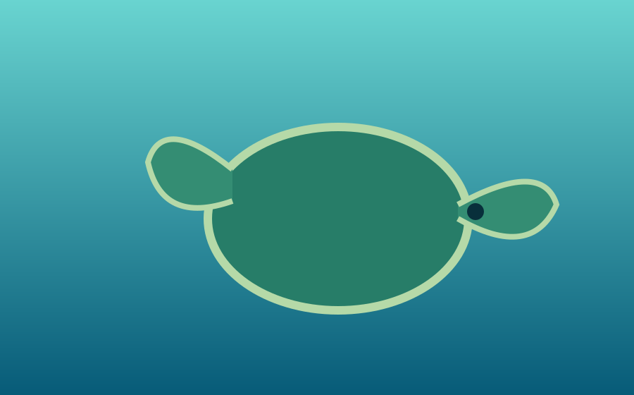
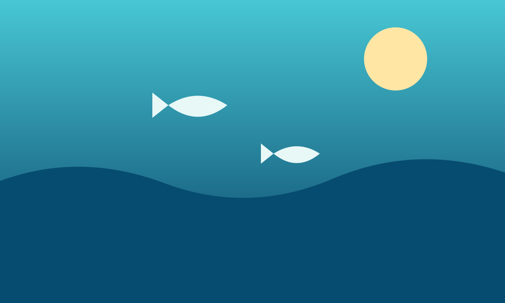
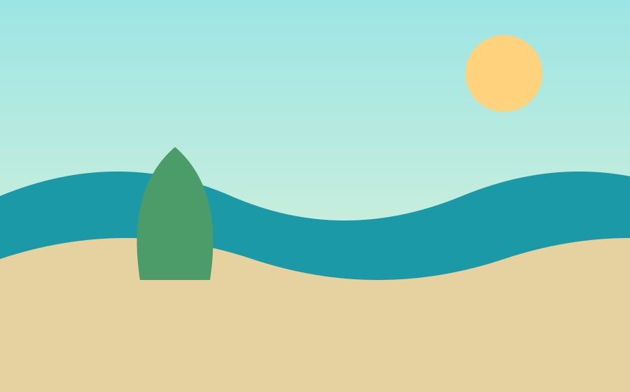

Coral reefs
Busy underwater neighborhoods that provide food and shelter for many species.
LIFE BELOW THE SURFACE
From tiny plankton to the largest whales, marine life makes the ocean one of Earth's most fascinating places.

MEET A MARINE NEIGHBOR
Sea turtles travel long distances between feeding areas and nesting beaches. They can be affected by plastic pollution, accidental capture in fishing gear, and changes to coastal habitats.
Busy underwater neighborhoods that provide food and shelter for many species.

A vast environment where tuna, sharks, dolphins, and drifting plankton live.

Shorelines, seagrass beds, and mangroves protect young wildlife and communities.